Know when to use the JPG and PNG file formats for bitmap images.
Add web browser resets in CSS to display images as fluid, block-level elements.
Insert images in a web page and add set a CSS margin-bottom value beneath them.
Include alternative text for inserted images.
Add drop shadow and rounded corner effects to inserted images.
You can view finished versions of the four sample web pages you will create in this Tutorial by clicking the links below. The finished samples will each open in a new tab of your web browser.
In this Tutorial, you will work with the two main image formats used on web pages: the jpg and the png format. Images in these formats can be created and edited with applications such as Adobe Photoshop, Gimp, Microsoft Paint or Apple Paintbrush.
JPG format images
This format (pronounced jay-peg) is the best choice for displaying photographs that contain lots of colours and colour gradations. It is not recommended for images containing text, line drawings or areas of solid colour.
Image files in this format end with the filename extension .jpg or .jpeg. You can see some examples of typical JPG-format images below.
PNG format images
This format (pronounced pea-n-g) is typically used for images that contain areas of solid colour, for logos and icons, and for line drawings.
Below are some examples of images suited to this file format. Such files end with the extension .png.
Photographic images can also be saved in PNG-format and will display in a web page with the same quality as if they were JPGs. But the image file sizes will be larger and, as a result, the web page will take longer to load.
A feature of PNG format images is that, unlike JPG files, they can have transparent backgrounds.
Where to find copyright-free images
A wide range of so-called stock photography websites exists from which you can download, modify and use copyright- and royalty-free images, whether for your personal, not-for-profit or commercial web projects.
In most cases, you do not need to credit the image’s creator, but it is good practice and courteous to do so.
Here are some popular sources of general-purpose stock images:
For illustrations rather than photographs, here are four open-source collections of vector images. Files can be downloaded as bitmap images in PNG-format.
Before you add any images to your web pages, you will want to change the default way in which images are displayed by web browsers. You can do this by adding a new rule to the beginning your CSS stylesheet file.
By default, web browsers display images as inline rather than block elements.
Typically, you will want your images to fill the entire horizontal width of their available, containing area.
By default, web browsers display images at their original widths and heights.
In practice, you will want your images to be fluid – to expand or shrink depending on the size of the user’s screen.
This new CSS rule is an example of a so-called browser reset. You will be adding more of these in later Tutorials.
Adding images to a web page
You add an image to a web page using the single, simple line of HTML code such as shown below.
<imgsrc="dog.jpg"alt="My dog Rover, playing in the park">
Or:
<imgsrc="cat-picture.png"alt="My cat Judy, sitting on a chair">
As you can see from the examples below, the HTML <img> tag for every image has the same format.
After the <img> are the three letters of src which set the source (location) of the image file. This is known as an attribute or property of the <img> tag.
Note that the <img> tag does not need a closing tag. It is one of the few examples of self-closing tags in HTML.
Images and alternative text
If as the result of a slow connection or other reason, an image on a web page cannot be displayed, HTML offers an attribute named alt, a short form of ‘alternative text.’
In the above example, all six inserted images each include a short alternative description.
If you omit the alternative text for any image on a web page, your web page is regarded as "invalid".
Your four sample web pages with files
Your first step is to download the files you need for this Tutorial.
The files will unzip into a sub-folder of your websites folder named lesson-3.
You should see 25 files: four HTML files, four CSS files and a group of image files.
Copy all these files from the lesson-3 sub-folder into your main websites folder.
In your web browser, such as Google Chrome or Mozilla Firefox Developer Edition, open these four web pages:
page-5.html page-6.html page-7.html page-8.html
You are now ready to work with the sample files you have downloaded.
Adding the web browser reset to your stylesheet files
Before adding any images to your web pages, you need to add a web browser reset to each of your stylesheet files.
Open Visual Studio Code, and then open the following four stylesheet files:
style-5.css style-6.css style-7.css style-8.css
Next, add the following four images to your HTML file in the locations shown.
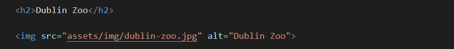
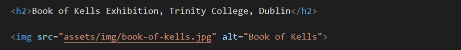
When finished, save your page-6.html file and view it in your web browser.
Adding a rounded corner effect
To give the images on your web page a rounded corner effect, add the following at the end of your style-6.css stylesheet.
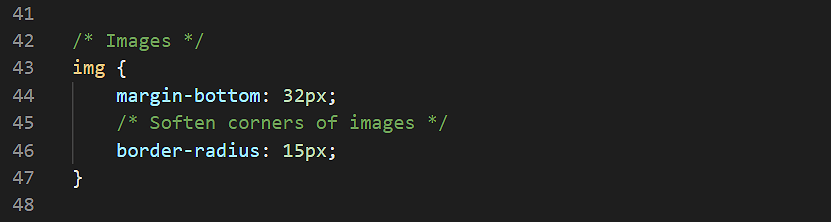
This will also add a vertical bottom margin of 32 pixels under each image.
Save your CSS file and view the effect on your page-6.html web page in your browser.
In VS Code, you can now close your page-6.html and style-6.css files
Click page-6.html to view a finished sample of this web page in a new tab of your web browser.
Working with the Smoothies sample web page
In this section, you will work with the sample page-7.html web page and the sample style-7.css stylesheet.
In Visual Studio Code, open the following two files:
page-7.html style-7.css
After the paragraph under the heading “Smooth Smoothies”, type the following line to add an image named “watermelon.png”:
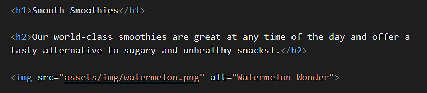
Or, just copy-and-paste the following:
<imgsrc="watermelon.png"alt="Watermelon Wonder">
Next, add the following three further images to your HTML file at the locations shown.
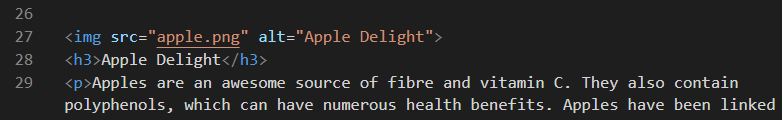
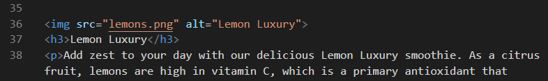
When finished, save your page-7.html file and view it in your web browser.
Removing an image background
You will see that the lemons.png image does not have a transparent background. Follow these steps to make the background of the image transparent.
Open a new tab in your web browser and go to this web address:
remove.bg
Click the Upload image button, and upload your lemons.png image file.
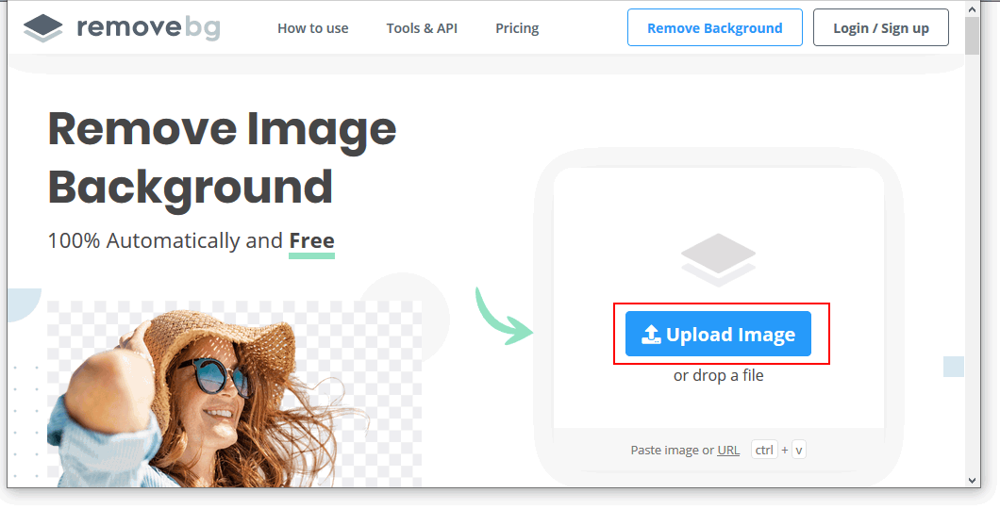
When the operation is finished, click the Download button.
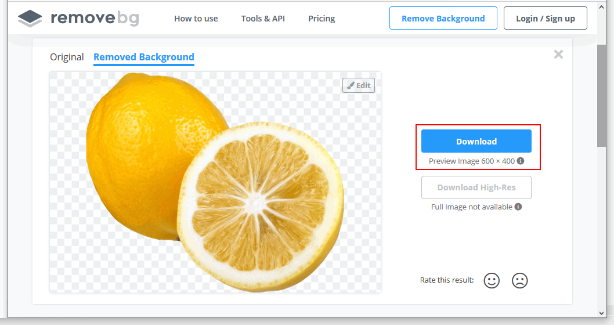
Your downloaded file will have a modified name such as:
lemons-removebg-preview.png
Copy this file to your websites folder, and add it to your web page to replace the original file which had a non-transparent, white background.
Save your web page and view the result in your browser.
In VS Code, you can now close your page-7.html and style-7.css files.
Click page-7.html to view a finished sample of this web page in a new tab of your web browser.
Working with the Software sample web page
In this section, you will work with the sample page-8.html web page and the sample style-8.css stylesheet.
In Visual Studio Code, open the following two files:
page-8.html style-8.css
At the very top of the web page, just after the opening <body> tag, type the following line to add a new image named “visual-data.png”:
Or, just copy-and-paste the following:
Next, add the following three more images to your HTML file at the locations shown.
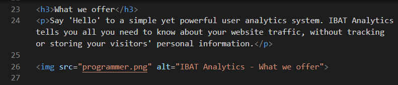
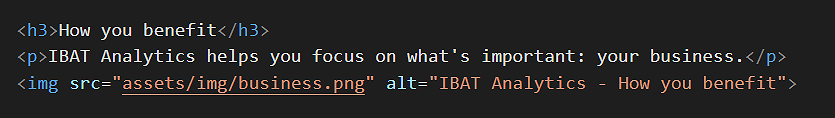
When finished, save your page-8.html file and view it in your web browser.
In VS Code, you can now close your page-8.html and style-8.css files.
Click page-8.html to view a finished sample of this web page in a new tab of your web browser.
Updating the content of your home page
Now that you have created and styled four new web pages, let’s add hyperlinks to these new pages to the ‘home page’ of your web site.
In Visual Studio Code, open this HTML file in your websites folder:
index.html
Its content should look as follows:
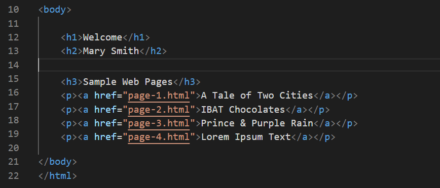
Copy-and-paste the following new lines to your web page, directly under the line that contains the link to the page-4.html web page.
<p><ahref="page-5.html">Vincent van Gogh</a></p>
<p><ahref="page-6.html">Irish Tourism</a></p>
<p><ahref="page-7.html">Smoothies</a></p>
<p><ahref="page-8.html">Software Analytics</a></p>
The <body> of your edited home page should now look similar to that below.
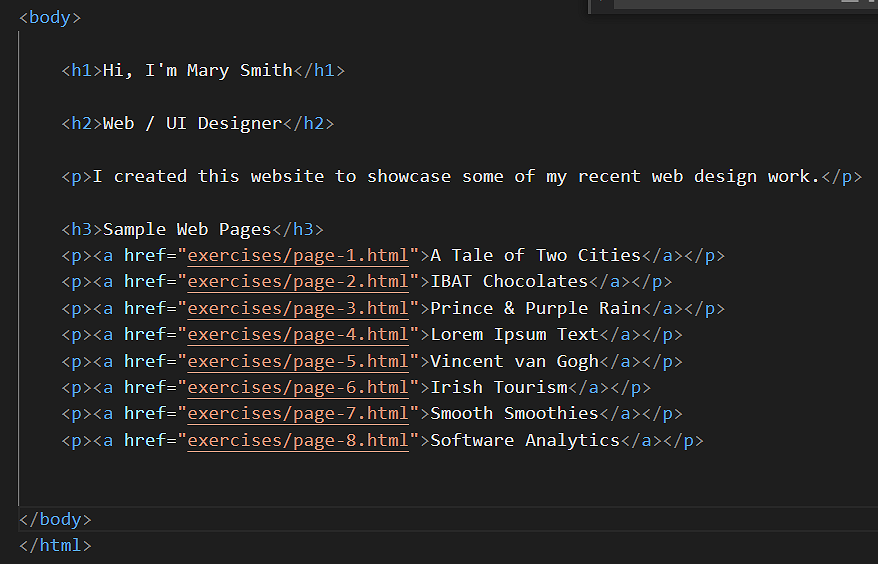
Save your index.html web page and view the result in your browser.
Uploading your files to GitHub
After finishing your web pages and stylesheets, you are now ready to upload them to your account on GitHub.
Open a new tab in your web browser and go to GitHub.com. If you are not already signed in to your GitHub account, sign in now.
On your GitHub home page, click the name of the repository (‘repo’) that holds your web pages. Its name will look as follows, where username is your chosen username on GitHub.
username.github.io
On the next GitHub screen displayed, near the right of the screen, you can see a button named Add file. Click on it.
From the dropdown list displayed, choose the option Upload files.
Because you have so many files for these four web pages, it’s quicker and easier to upload your entirewebsites folder to your GitHub account by dragging-and-dropping.
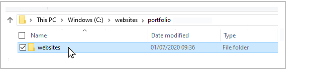
Finally, scroll down to the bottom of the GitHub screen, enter a short message in the Commit changes box and click the Commit changes button.
Your web pages are now published on GitHub at web addresses similar to the following, where username is the username you have chosen for your GitHub account:


 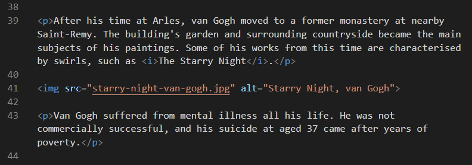
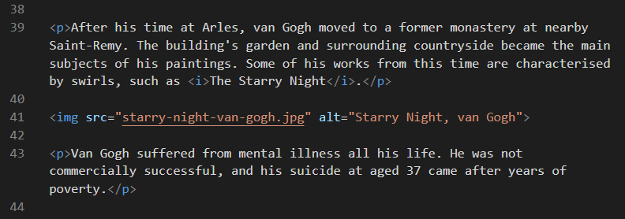
 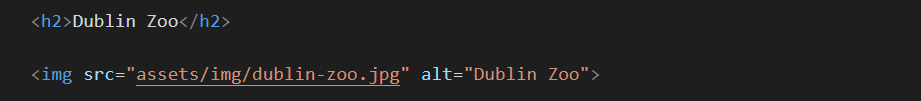
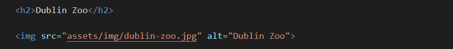
 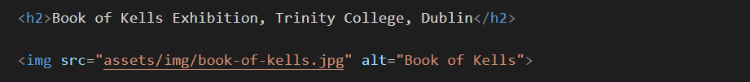
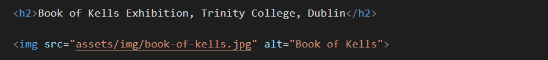 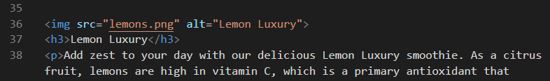
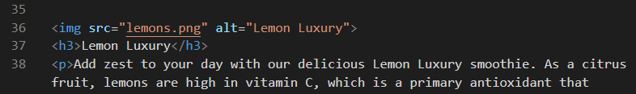 Or, just copy-and-paste the following:
Or, just copy-and-paste the following: